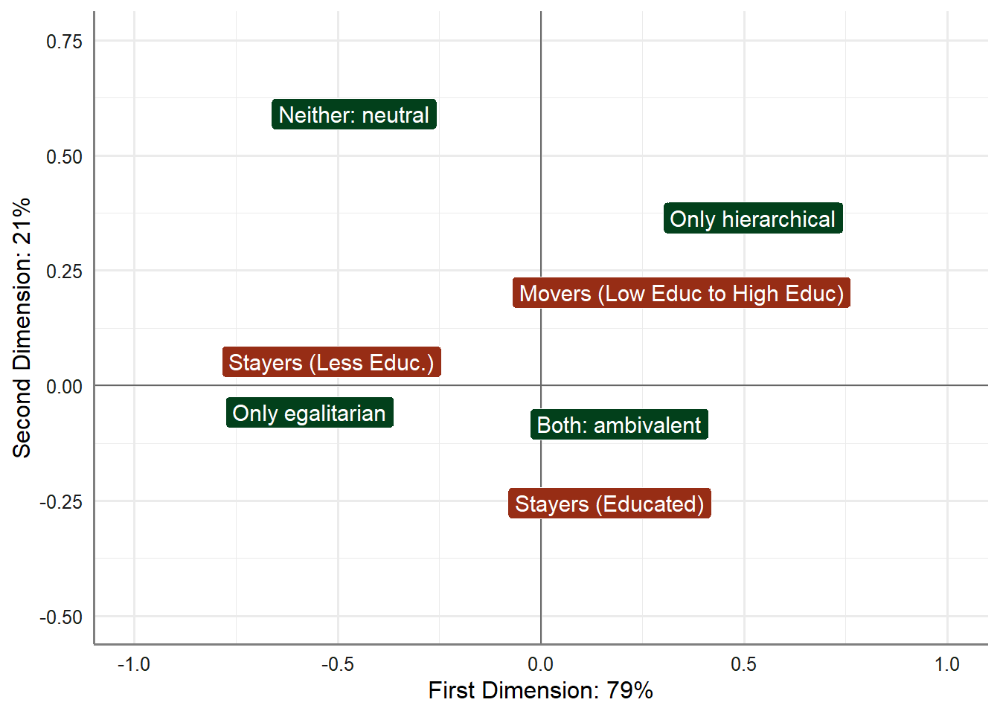

| Stayers (Educated) | Movers (Low Educ to High Educ) | Stayers (Less Educ.) | |
|---|---|---|---|
| Only hierarchical | 2 | 5 | 1 |
| Only egalitarian | 6 | 3 | 13 |
| Both: ambivalent | 22 | 20 | 13 |
| Neither: neutral | 0 | 2 | 3 |
Introduction
In summarizing their results, van den Haak and Wilterdink note that “[a]s Table 1 specifies, the well-educated are clearly overrepresented in the hierarchical type and the (much larger) category of the ambivalent type, whereas the less-educated make up larger pro-portions of the egalitarian and the neutral categories.”
